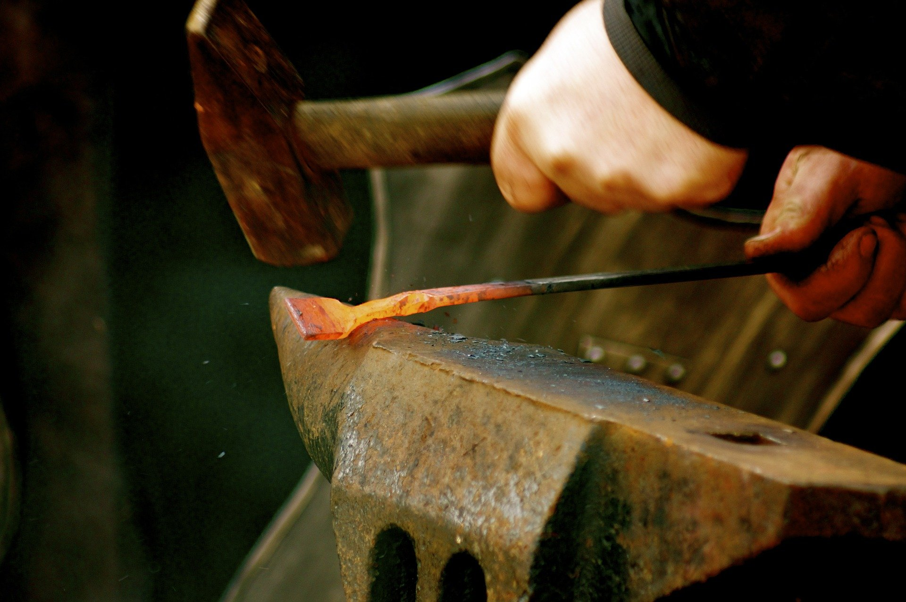

Blacksmithy or Forging is an oldest shaping process used for the producing small articles for which accuracy in size is not so important. The parts are shaped by heating them in an open fire or hearth by the blacksmith and shaping them through applying compressive forces using hammer.
Thus forging is defined as the plastic deformation of metals at elevated temperatures into a predetermined size or shape using compressive forces exerted through some means of hand hammers, small power hammers, die, press or upsetting machine. It consists essentially of changing or altering the shape and section of metal by hammering at a temperature of about 980°C, at which the metal is entirely plastic and can be easily deformed or shaped under pressure. The shop in which the various forging operations are carried out is known as the smithy or smith’s shop.
Hand forging process is also known as black-smithy work which is commonly employed for production of small articles using hammers on heated jobs. It is a manual controlled process even though some machinery such as power hammers can also be sometimes used. Black-smithy is, therefore, a process by which metal may be heated and shaped to its requirements by the use of blacksmith tools either by hand or power hammer.
Forging by machine involves the use of forging dies and is generally employed for mass-production of accurate articles. In drop forging, closed impression dies are used and there is drastic flow of metal in the dies due to repeated blow or impact which compels the plastic metal to conform to the shape of the dies.